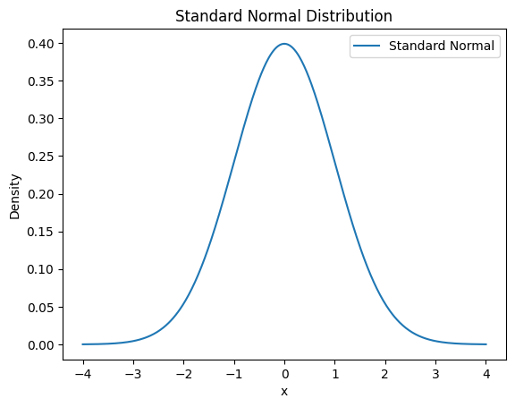
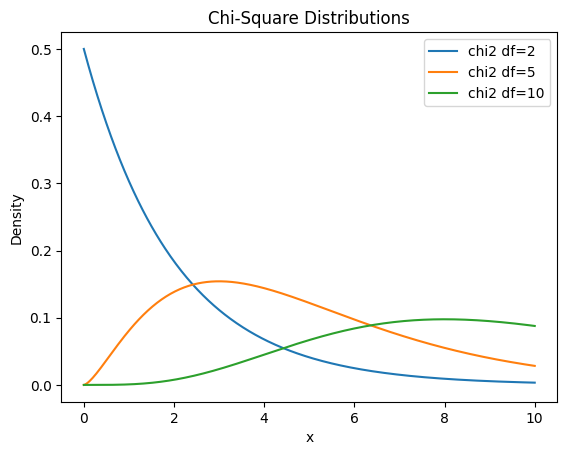
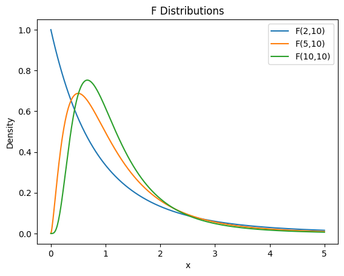

1.0 למה מתחילים דווקא כאן?
כל הקורס הזה — רגרסיה, ANOVA, מבחני t — בנוי על ארבע התפלגויות: נורמלית, חי-בריבוע (χ²), t ו-F. הן לא ארבע התפלגויות אקראיות: הן משפחה אחת, וכולן נולדות מהנורמלית.
ביחידה הזאת נבנה את הבסיס: מה זה בכלל משתנה מקרי, איך מתארים אותו (פונקציות הסתברות), איך מסכמים אותו (תוחלת ושונות), ואז נכיר את בני המשפחה. בסוף היחידה תבין למה מבחן F של ANOVA נקרא ככה ומאיפה מגיעה טבלת ה-t.
1.1 משתנה מקרי — בדיד מול רציף
משתנה מקרי הוא פשוט דרך לתת מספר לתוצאה של ניסוי אקראי. מטילים מטבע 10 פעמים? מספר הפעמים שיצא "עץ" הוא משתנה מקרי. מחכים לאוטובוס? זמן ההמתנה הוא משתנה מקרי.
יש שני סוגים, וההבדל ביניהם קובע איך עובדים איתם:
| בדיד (Discrete) | רציף (Continuous) | |
|---|---|---|
| מה זה | ערכים ספירים: 0, 1, 2, 3… | כל ערך בקטע: 2.7183… גם אפשרי |
| דוגמה | מספר הצלחות בהטלות מטבע | זמן המתנה, גובה, משקל |
| איך מחשבים הסתברות | סוכמים (Σ) | עושים אינטגרל (∫) |
1.2 פונקציות הסתברות: PMF, PDF ו-CDF
PMF — למשתנה בדיד
פונקציית הסתברות (Probability Mass Function) אומרת מה ההסתברות של כל ערך בנפרד: \(P(X=x)\). כדי שהיא תהיה חוקית צריכים להתקיים שני תנאים:
PDF — למשתנה רציף
במשתנה רציף אי אפשר לדבר על הסתברות של ערך בודד — היא תמיד אפס! (מה הסיכוי שזמן ההמתנה יהיה בדיוק 7.000000… דקות?). במקום זה יש פונקציית צפיפות \(f(x)\), והסתברות מקבלים משטח מתחתיה:
CDF — הפונקציה המצטברת
פונקציית ההתפלגות המצטברת עונה על השאלה "מה ההסתברות להיות עד x?":
אז \(P(X>1) = 0.5 + 0.3 = 0.8\).
אז \(P(0\le X\le 1)=\int_0^1 \tfrac{1}{2}\,dx=\tfrac{1}{2}\).
1.3 תוחלת ושונות — שני המספרים שמסכמים הכל
תוחלת \(E[X]\) היא "מרכז הכובד" של ההתפלגות — הממוצע לטווח ארוך. אם נחזור על הניסוי מיליון פעמים, לשם הממוצע יתכנס:
שונות \(Var(X)\) מודדת כמה התוצאות מתפזרות סביב התוחלת. שונות קטנה = תוצאות צפופות וצפויות; שונות גדולה = הפתעות.
רציף: אחיד על \([0,2]\): \(E[X]=\int_0^2 x\cdot\tfrac{1}{2}\,dx = 1\) — בדיוק אמצע הקטע, כמו שהאינטואיציה אומרת.
1.4 ההתפלגות הנורמלית ותקנון
הכוכבת של הסטטיסטיקה. נורמלית מוגדרת על ידי שני פרמטרים בלבד — תוחלת \(\mu\) (איפה המרכז) ושונות \(\sigma^2\) (כמה רחבה):

תקנון — הטריק שהופך כל נורמלית לאותה נורמלית
מתקננים: \(Z=\frac{12-10}{2}=1\), ולכן \(P(X\le 12)=P(Z\le 1)\approx 0.84\) מהטבלה.
1.5 חי-בריבוע (χ²) — ההתפלגות של "רעש בריבוע"
מה היא בדיוק?
קחו \(k\) משתנים נורמליים סטנדרטיים בלתי תלויים \(Z_1,\dots,Z_k\) — תחשבו על כל אחד מהם כעל "רעש" טהור שמרכזו 0. העלו כל אחד בריבוע, חברו הכל — והמספר שקיבלתם הוא משתנה מקרי חדש. ההתפלגות שלו נקראת חי-בריבוע:
המספר \(k\) — כמה "חתיכות רעש" בלתי תלויות נכנסו לסכום — נקרא דרגות חופש, וזה הפרמטר היחיד של ההתפלגות. ומאיפה מגיעה התוחלת \(k\)? כל \(Z_i^2\) תורם בממוצע בדיוק 1 (כי \(E[Z^2]=Var(Z)=1\)), אז \(k\) איברים תורמים בממוצע \(k\).
איך היא נראית — ולמה

① עם מעט דרגות חופש (df=2) היא צמודה לאפס. שני ריבועים של רעשים קטנים — רוב הסיכוי שהסכום ייצא קטן, לכן הצפיפות הכי גבוהה ליד 0 ויורדת משם.
② ככל ש-k גדל היא זזה ימינה. הגיוני — התוחלת היא \(k\): יותר איברים בסכום = סכום גדול יותר בממוצע.
③ ככל ש-k גדל היא נהיית סימטרית ופעמונית. סכום של הרבה משתנים בלתי תלויים מתחיל להיראות נורמלי — זה משפט הגבול המרכזי בפעולה (נפגוש אותו רשמית ביחידה 3).
④ והיא גם נהיית רחבה ושטוחה יותר. השונות שלה היא \(2k\) — כל איבר שמוסיפים לסכום מוסיף גם אי-ודאות, אז הסכום מתפזר על טווח רחב יותר. ולמה שטוחה? כי השטח מתחת לכל עקומת צפיפות חייב להיות בדיוק 1 — כמו כמות קבועה של בצק: אם מרדדים אותו על שטח רחב יותר, הוא בהכרח נהיה נמוך יותר. (נקודה עדינה: ביחס לגודל שלה ההתפלגות דווקא מתייצבת — הפיזור \(\sqrt{2k}\) גדל הרבה יותר לאט מהתוחלת \(k\). לכן "ממוצע ריבועים" \(\chi^2_k/k\) ננעל על 1 כש-k גדול, וזה מה שייתן ל-F שלנו יציבות.)
בשביל מה היא קיימת? שלושה תפקידים
תפקיד 1: ההתפלגות של שונות מדגמית. כשמחשבים שונות \(S^2\) ממדגם נורמלי, התוצאה משתנה ממדגם למדגם — כלומר \(S^2\) הוא בעצמו משתנה מקרי. ואיך הוא מתפלג? בדיוק חי-בריבוע (אחרי נרמול):
בזכות הקשר הזה אפשר לבנות רווחי סמך ומבחני השערות על שונות — לא רק על ממוצעים.
תפקיד 2: מבחני טיב התאמה (Goodness of Fit). רוצים לבדוק אם קובייה הוגנת? מטילים 600 פעמים, משווים כמה יצא בפועל לכל פאה מול הצפוי (100), מרבעים את הפערים ומחברים — והסטטיסטי שמתקבל מתפלג χ². סכום פערים גדול מדי = כנראה הקובייה מוטה.
תפקיד 3: אבן הבניין של t ו-F. שתי ההתפלגויות שנפגוש בכל שאר הקורס בנויות ממנה: t היא "נורמלית חלקי שורש של χ² מנורמלת", ו-F (הסעיף הבא) היא מנה של שתי χ². בלי חי-בריבוע — אין מבחני t ואין ANOVA.
1.6 התפלגות F — ההתפלגות של יחס בין שונויות
מה היא בדיוק?
לוקחים שתי חי-בריבוע בלתי תלויות, מנרמלים כל אחת בדרגות החופש שלה, ומחלקים זו בזו:
פענוח הסימנים: \(U\) ו-\(V\) הם לא סימנים מיוחדים — אלה סתם שמות (בדיוק כמו X ו-Y) לשני משתני חי-בריבוע בלתי תלויים: \(U\) הוא זה שיושב במונה, עם \(d_1\) דרגות חופש, ו-\(V\) זה שבמכנה, עם \(d_2\). בהמשך הקורס יהיה להם תפקיד קבוע: \(U\) יהיה "סכום הריבועים של האפקט שמעניין אותנו" (למשל ההבדלים בין קבוצות), ו-\(V\) — "סכום הריבועים של הרעש".
רגע, למה מחלקים כל אחת בדרגות החופש שלה לפני שמחלקים זו בזו? כי סכום ריבועים גדל ככל שיש בו יותר איברים — לא הוגן להשוות סכום של 3 ריבועים לסכום של 30. החלוקה ב-df הופכת כל צד ל"ממוצע ריבועים" (Mean Square — תזכור את השם, זו עמודה שלמה בטבלת ANOVA!). ולממוצע כזה יש תכונה נהדרת: התוחלת שלו היא בדיוק 1, כי \(E[\chi^2_k/k]=k/k=1\).
איך היא נראית

① תמיד חיובית — מנה של שני דברים חיוביים (סכומי ריבועים).
② מוטה ימינה עם זנב ארוך — המכנה יכול במקרה לצאת קטן, ואז היחס מזנק.
③ שני פרמטרים — דרגות חופש של המונה \(d_1\) ושל המכנה \(d_2\). ככל ששתיהן גדלות, שני הממוצעים מתייצבים על 1 וההתפלגות מתכווצת סביב 1.
בשביל מה היא קיימת? שלושה תפקידים
תפקיד 1: השוואת שונויות של שתי אוכלוסיות. יש שני מכשירי מדידה ורוצים לדעת אם אחד "רועש" יותר? מחשבים \(S_1^2/S_2^2\). אם לשתי האוכלוסיות באמת אותה שונות, היחס מתפלג \(F(n_1-1,\,n_2-1)\) ואמור לצאת קרוב ל-1. יחס רחוק מ-1 = עדות לפער אמיתי.
תפקיד 2: ANOVA (יחידה 8) — הבמה המרכזית שלה. שם נחשב \(F=MS_B/MS_W\): ממוצע ריבועים בין הקבוצות חלקי ממוצע ריבועים בתוך הקבוצות. אם לכל הקבוצות באמת אותו ממוצע — שניהם מודדים את אותו רעש ו-\(F\approx 1\). אם הקבוצות שונות באמת — המונה מתנפח ו-F זינוק. שאלות 14–16 במבחן חיות בדיוק שם.
תפקיד 3: רגרסיה (יחידה 4) — "האם המודל בכלל שווה משהו?" בפלט של statsmodels יש שורת F-statistic: היא בודקת אם המודל כולו מסביר יותר מסתם רעש. אותו רעיון בדיוק — יחס בין "כמה המודל מסביר" ל"כמה נשאר רעש".
🔎 בונוס: הקשר החמוד בין F ל-t
אם לוקחים משתנה t עם \(\nu\) דרגות חופש ומעלים אותו בריבוע, מקבלים בדיוק \(F(1,\nu)\). כלומר מבחן t דו-צדדי ומבחן F עם דרגת חופש אחת במונה הם אותו מבחן בתחפושת — עוד עדות שכל המשפחה הזאת מחוברת.
1.7 המשפחה כולה — התמונה הגדולה
עכשיו אפשר לראות את כל השרשרת. הכל מתחיל בנורמלית:
| התפלגות | איך נבנית | למה משמשת בקורס |
|---|---|---|
| נורמלית N | נקודת המוצא | מודל לנתונים ולשגיאות; משפט הגבול המרכזי |
| χ² (חי-בריבוע) | סכום ריבועים של Z-ים | התפלגות של שונויות וסכומי ריבועים (SS) |
| t | Z חלקי שורש של χ² מנורמלת | מבחנים על תוחלת כשהשונות לא ידועה (יחידה 3), מובהקות מקדמי רגרסיה (יחידה 4) |
| F | מנה של שתי χ² מנורמלות | השוואת שונויות, ANOVA (יחידה 8), בדיקת מודלים ברגרסיה |
שואלים על ממוצע אבל את השונות אומדים מהמדגם? ⇐ t.
שואלים על שונות / סכום ריבועים / פערים בריבוע? ⇐ χ².
משווים שני מקורות של פיזור (יחס)? ⇐ F.
🔎 הצצה קדימה: איפה נפגוש כל אחת מהן?
t — כבר ביחידה 3 (מבחני t) ואז בכל פלט רגרסיה (עמודת t ו-P>|t| של כל מקדם).
χ² — מאחורי הקלעים של כל SS (סכום ריבועים) ב-ANOVA: שאלות 15–16 במבחן על דרגות חופש הן בדיוק על זה.
F — הסטטיסטי המרכזי של ANOVA: \(F = MS_B/MS_W\) הוא ממש מנה של שתי חי-בריבוע מנורמלות בדרגות החופש שלהן.
1.8 סיכום היחידה + מה חשוב לבחינה
| מושג | שורה תחתונה |
|---|---|
| PMF / PDF | בדיד: הסתברות לכל ערך (סכום 1). רציף: צפיפות — הסתברות היא שטח (אינטגרל 1) |
| CDF | \(F(x)=P(X\le x)\) — מטפסת מ-0 ל-1 |
| תוחלת | מרכז הכובד: \(\sum xP(x)\) או \(\int xf(x)dx\) |
| שונות | פיזור סביב המרכז: \(E[X^2]-(E[X])^2\) |
| תקנון | \(Z=(X-\mu)/\sigma\) — כל נורמלית הופכת ל-N(0,1) |
| χ² | סכום k ריבועי Z-ים; תוחלת k, שונות 2k |
| F | מנה של שתי χ² מנורמלות; תמיד חיובית; שתי דרגות חופש |